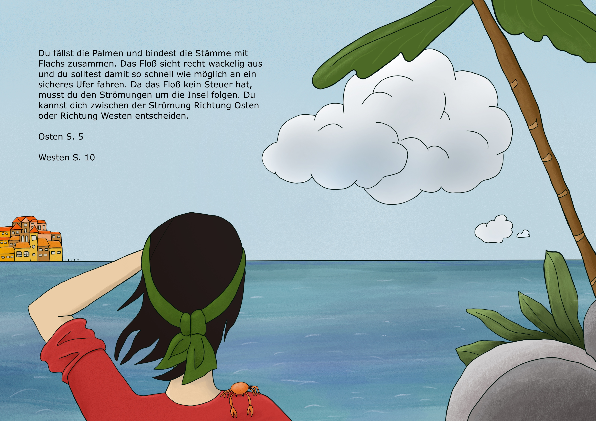

Du fällst die Palmen und bindest die Stämme mit Flachs zusammen. Das Floß sieht recht wackelig aus und Du solltest damit so
schnell wie möglich an ein sicheres Ufer fahren.
Da das Floß kein Steuer hat, musst du den Strömungen um die Insel folgen. Du kannst dich zwischen der Strömung Richtung Osten
oder Richtung Westen entscheiden.
Osten (Seite 6)
Westen (Seite 11)